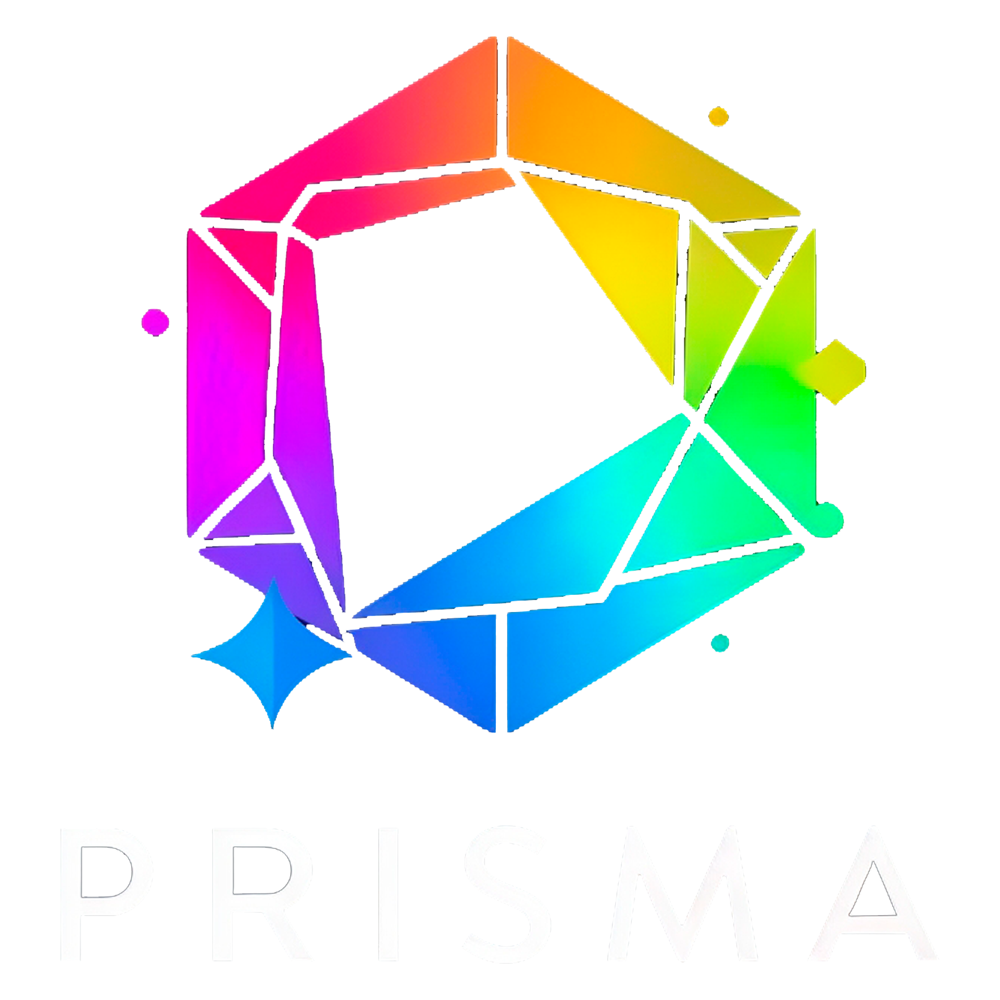

PRISMA
Este espacio es 100% anónimo. Tu identidad está a salvo.
Ayúdanos a identificar por qué los ajustes razonables fracasan o se estancan en la empresa.

Este espacio es 100% anónimo. Tu identidad está a salvo.
Ayúdanos a identificar por qué los ajustes razonables fracasan o se estancan en la empresa.